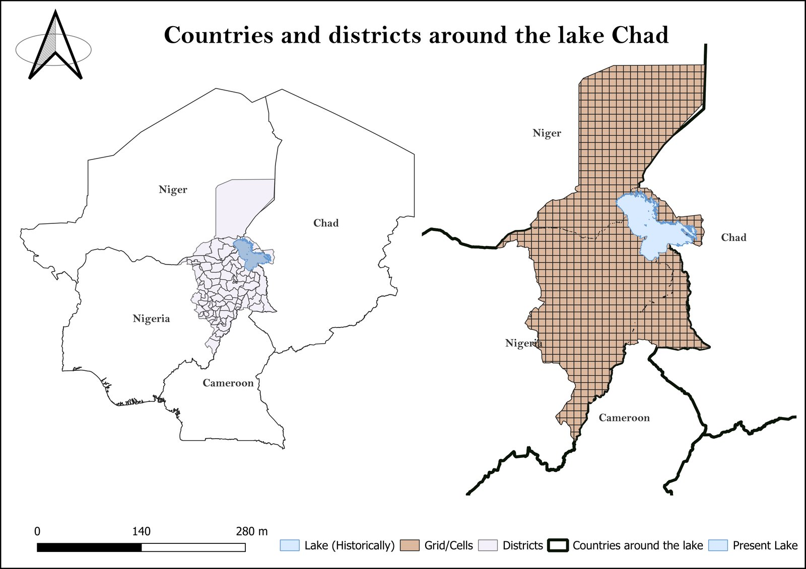
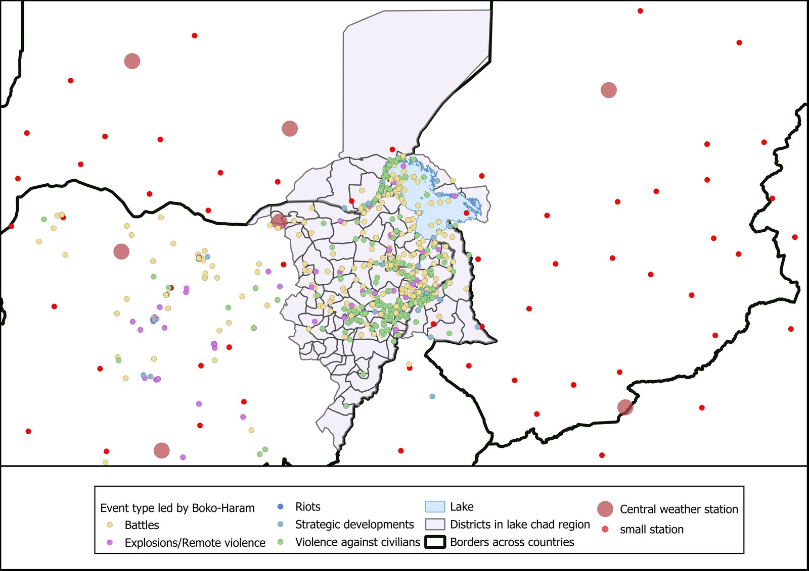
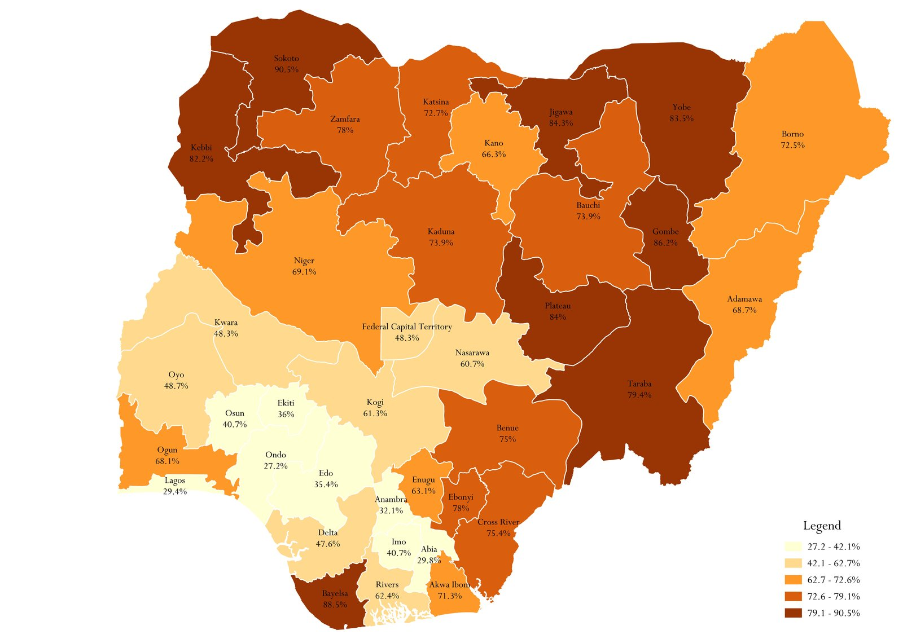
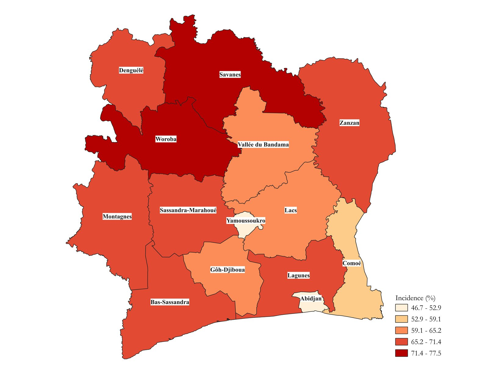

Applied empirical work on climate, conflict, and social protection — combining econometrics, GIS, and survey data across Sub-Saharan Africa.
2026 —
Sudan — Kordofan, Darfur Regions Impact Initiatives
Current Role
Data Officer — Research Cycle Management
Supporting a portfolio of humanitarian needs assessments and information management products across Sudan, from sampling design and tool development through to data cleaning and dashboard delivery — working alongside assessment and GIS teams.
Current projects
Food Security, Livelihoods & Nutrition Assessment — Kordofan Regions: data collection and cleaning across 10 localities; analysis and reporting ongoing
Movement Intention Surveys: two displacement-site assessments in White Nile, plus a survey covering North & West Kordofan and Darfur regions
MSNA (Multi-Sector Needs Assessment): sampling design and tool preparation
Rapid Needs Assessment: tool preparation and deployment
Displacement site mapping: identifying IDP sites, disaggregating population figures by gender and age group, and flagging the most critical needs by location
JMMI (Joint Market Monitoring Initiative): dashboard design and development
Findings, figures, and underlying data from these ongoing humanitarian assessments are not published here out of respect for data sensitivity and organizational policy. This entry describes role, scope, and methods only.
2024
Lake Chad Basin Cameroon · Chad · Niger · Nigeria
Working Paper
Boko Haram Violence and Climate Change in the Lake Chad Region
A district- and grid-cell-level panel study (2009–2022, 92 administrative districts) testing whether climate anomalies — temperature, rainfall, vegetation (NDVI), and drought (SPEI) — predict the intensity and spread of Boko Haram violence, and whether that relationship depends on cropland share and urbanization.

Study area: districts and grid cells across Niger, Chad, Nigeria, and Cameroon
Key finding
Drought conditions (low NDVI, low SPEI) and higher temperatures are associated with significantly higher conflict intensity at both district and cell level. Critically, this effect is not uniform: the temperature–conflict link is significantly stronger in areas with a higher cropland share — consistent with a drought-income-conflict channel where poor harvests drive unrest. Conflict also shows strong spatial spillover between neighboring districts.
Method
92 districts + grid cells (~10km²) across the Lake Chad basin, 2009–2022; conflict data from ACLED, climate data from MODIS (NDVI, temperature) and CHIRPS (rainfall)
Fixed-effects panel regression (Eq. 1) with climate anomalies and a spatially lagged conflict term, run separately at district and cell level
Heterogeneous-effects model (Eq. 2) interacting each climate variable with cropland share, to test whether agricultural exposure moderates the climate–conflict link
A third specification interacts climate anomalies with travel time to nearest city (urbanization) to test effects on population dynamics
Addressed reverse causality (lagged variables), omitted variable bias (population, infrastructure, night-lights controls), and spatial autocorrelation (spatial FE + lag)

Boko Haram conflict events by type, with central and small weather stations used for climate data
Hypotheses tested
H1 — Drought (low NDVI) has a negative relationship with conflict intensity → confirmed
H2 — Cropland share moderates the climate–conflict relationship → confirmed: temperature's effect on conflict nearly doubles in high-cropland districts (interaction coefficient 1.89, p<0.05)
H3 — Travel time to cities moderates climate's effect on population dynamics → confirmed at the cell level
2024
Nigeria 37 States, 6 Geopolitical Zones
Policy Brief
Multidimensional Poverty and Social Protection Assistance in Nigeria
A state-level diagnostic asking whether Nigeria's three major social assistance programs (P-CGS, VGF, CCT) reach the households who need them most.

Multidimensional poverty incidence by state — NBS (2022)
Key finding
They largely don't. States with the highest poverty (MPI above 80% — Sokoto, Bayelsa, Gombe, Jigawa, Plateau) receive the lowest program coverage, while some moderate-poverty states show National Social Register enrolment exceeding 100% of their poor population — a sign of likely misclassification. 47.4% of Nigeria's poor are not registered at all.
Method
Merged NBS state-level Multidimensional Poverty Index data with National Social Register and program beneficiary figures
Built a choropleth map of poverty incidence across all 37 states
Computed coverage gaps (poor population vs. registered population) by state and geopolitical zone
Cross-tabulated program reach (P-CGS, VGF, CCT) against poverty severity to surface targeting mismatches
2024–2025
Côte d'Ivoire UNICEF / Ministry of Economy, Plan & Development
Government Report
N-MODA: National Multiple Overlapping Deprivation Analysis on Child Poverty
As a Social Policy Intern at UNICEF Côte d'Ivoire, I led the data analysis underlying the 3rd edition of the country's official child poverty report — based on EDS 2021 survey data, using the MODA methodology to measure deprivation across 7 dimensions for children aged 0–17.

Multidimensional child poverty incidence by region — N-MODA 2024
Key finding
8.6 million children — 62.5% of those under 18 — experience multidimensional poverty. Nearly all children (97.5%) face at least one deprivation, and 85.2% face at least two simultaneously. Deprivation is most severe for children aged 0–4 (68% poor) and is consistently higher for girls, particularly in the health dimension (57%).
Method
Applied the MODA (Multiple Overlapping Deprivation Analysis) methodology, child-centered across three life-cycle stages (0–4, 5–14, 15–17)
Measured deprivation across 7 dimensions: housing, water & sanitation, health, education, protection, nutrition, and child labor, using EDS 2021 survey data
Aggregated indicators using a union approach within each dimension
Compared trends against MICS 2016 to assess progress and regression by dimension and age group since the prior edition
The N-MODA report is an official publication of Côte d'Ivoire's Ministry of Economy, Plan and Development (Office National de la Population) in collaboration with UNICEF, validated December 2024. It is linked here as a credit to my contribution, not republished — underlying EDS 2021 microdata is confidential.
2024–2025
Côte d'Ivoire UNICEF
Companion Analysis
Socioeconomic Analysis & Child Well-Being: Budgets, Trends, and a Simulation
A companion analysis to N-MODA, linking Côte d'Ivoire's macroeconomic trends and social-sector budget allocations (2020–2024) to outcomes for children, with an elasticity-based simulation projecting education indicators forward.
Key finding
Despite real GDP growth of 44% between 2019 and 2024, social-sector spending fell from 28.7% to 22.7% of the national budget over the same period — education's share alone dropped from 17.3% to 12.4% — coinciding with a decline in primary completion rates from 83.7% (2021) to 78.6% (2023).
Method
Compiled macroeconomic indicators (GDP, inflation, poverty rate, Gini) and social-sector budget shares, 2019–2024, from WDI, IMF, and Ivorian finance law data
Tracked budget allocation across 6 social sectors (education, health, water/sanitation, child protection, social protection, youth employment) against child welfare indicators
Built an elasticity-based simulation (regression not viable given the short 5-year series) to project 2025 education indicators under a proposed 2% spending increase
Projected primary completion rate recovering to 80.3% in 2025 under the increased-budget scenario, against a 2024 low of 73.8%
Published by UNICEF Côte d'Ivoire as a companion piece to the N-MODA report. Linked here as a credit to my contribution to the underlying analysis.
Code & notebooks
Applied analysis, in code.
RCT Field Monitoring
High-Frequency Checks — Saving RCT, Benin
Stata pipeline for real-time data quality monitoring during a savings-behavior RCT: duplicate detection, skip-pattern validation, and a respondent attrition funnel — built to catch enumeration issues while teams were still in the field.